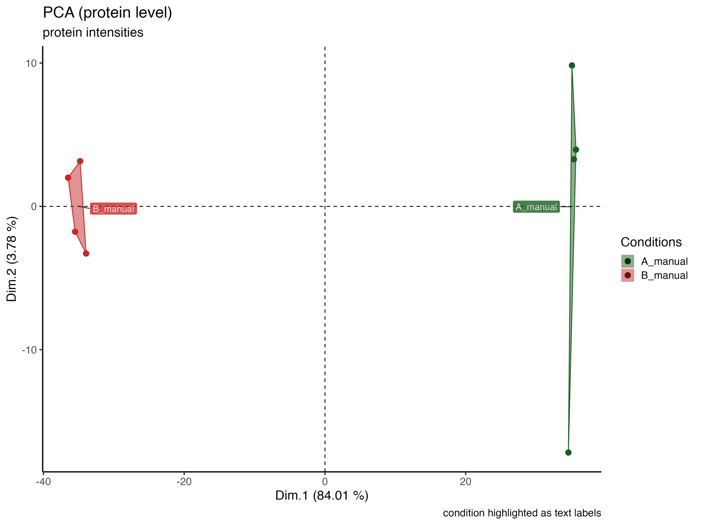

SpectroPipeR - step 3 - MVA analysis
a03_SpectroPipeR_MVA_analysis.RmdSpectroPipeR MVA analysis
Multivariate analysis (MVA) is particularly useful for analyzing complex datasets, as it provides a deeper, more nuanced understanding of the relationships between the samples.
background information
The PCA analysis is performed on the normalized log2 peptide (peptide intensity) and log2 protein (MaxLFQ or Hi3 intensity) level using all data. The principle component analysis for peptide and protein level was done using the factomineR package, where data was scaled to unit variance.
PCA
PCA stands for Principal Component Analysis, which is a statistical technique used to reduce the dimensionality of large data sets. It does this by transforming a large set of variables into a smaller one that still contains most of the information in the large set. This is achieved by finding new variables, called principal components, that are linear combinations of the original variables and capture as much of the variation in the data as possible.
The first principal component captures the largest amount of variation in the data, while each subsequent component captures the next largest amount of variation.
A PCA plot is a visual representation of the results of a Principal Component Analysis (PCA). It can help you understand the relationships between the samples in your data by showing how they cluster together based on their similarity.
Samples that are close together on the plot are similar to each other, while samples that are far apart are dissimilar. The direction and length of the arrows on the plot show how each variable contributes to the first and second principal components.
The first and second dimensions of a PCA plot represent the first and second principal components of the data, respectively. These are the two directions in the data that capture the most variation. The first principal component captures the largest amount of variation in the data, while the second principal component captures the second largest amount of variation.
UMAP
UMAP stands for Uniform Manifold Approximation and Projection. It is a dimension reduction technique that can be used for visualization similarly to t-SNE, but also for general non-linear dimension reduction. UMAP is a powerful tool for machine learning practitioners to visualize and understand large, high dimensional datasets. It offers a number of advantages over t-SNE, most notably increased speed and better preservation of the data’s global structure.
To perform a UMAP analysis, the first step is to construct a high-dimensional graph representation of the data. This is done by finding the k-nearest neighbors for each data point and connecting them with edges. The weight of each edge is determined by the distance between the two points it connects. Next, a low-dimensional graph is optimized to be as structurally similar as possible to the high-dimensional graph. This is done using a stochastic gradient descent algorithm that minimizes the cross-entropy between the two graphs.
The result of a UMAP analysis is a low-dimensional representation of the data that can be visualized using a scatter plot. Each point on the plot represents a sample, and its position reflects its values for the first two or three principal components. Samples that are close together on the plot are similar to each other, while samples that are far apart are dissimilar.
In summary, UMAP analysis is performed by constructing a high-dimensional graph representation of the data, then optimizing a low-dimensional graph to be as structurally similar as possible. The result is a low-dimensional representation of the data that can be visualized and used to understand patterns and relationships in the data.
The MVA_module() function will generate:
- PCA analysis
- (optional) HCPC (hierarchical clustering on principle components) analysis, for more information see factomineR
- correlation analysis
- UMAP analysis
example code
MVA_module() needs the output of the norm_quant_module() !
# step 3: MVA module
MVA_module(SpectroPipeR_data_quant = SpectroPipeR_data_quant)MVA_module() outputs
The output in your specified output folder for the MVA_module() function should look like in this example (04_multivariate_analysis):
MVA - RDS files
.rds files are a file format used in R to save and load single R objects, such as data frames, models, or lists
The **PCA_analysis__peptide_level.RDS** data R object file contains the PCA data on peptide level
The **PCA_analysis__protein_level.RDS** data R object file contains the PCA data on protein level
The **UMAP_analysis__protein_level.RDS** data R object file contains the UMAP data on protein level
MVA - figures
correlation_plots
The correlation_plots depicts the spearman correlation score (closer to 1 = higher correaltion) on peptide and protein level in a tile plot.

3D PCA_plots
The 3D_PCA_plot__peptide_level.html and 3D_PCA_plot__protein_level.html are interactive 3D representations of the 1st-2nd-3rd dimension of the PCA.
PCA_plots
The PCA_plots encompass a series of graphical representations, arranged from top to bottom. These include a scree plot, a contribution plot, a PCA plot comparing the 1st and 2nd dimensions, and a Biplot. The panel is divided into two sections: the left side illustrates the peptide level, while the right side depicts the protein level.
The scree plot is a visual tool that helps determine the optimal number of components or factors to retain in multivariate analysis by examining the pattern of explained variance across the different components.
The contribution plot depicts the Top10 variable contributions in the determination of a given principal component are (in percentage) : (var.cos2 * 100) / (total cos2 of the component)
The PCA plot comparing the 1st and 2nd dimensions of the samples.
The biplot displays the relationships between samples and proteins/peptides in a dataset.

PCA_plot_protein_level_conditions_marked
The PCA_plot_protein_level_conditions_marked graphically represents the samples in the 1st and 2nd PCA dimensions at the protein level, with colors indicating their respective conditions.

PCA_plot_protein_level_replicates_marked
The PCA_plot_protein_level_replicates_marked graphically represents the samples in the 1st and 2nd PCA dimensions at the protein level, with colors indicating their respective conditions and text labels indicating the replicates.

The PCA_plot_1st_to_5th_dimension__protein_level graphically represents the samples in the 1st to the 5th PCA dimensions at the protein level, with colors indicating their respective conditions.

PCA_plot_protein_level_measurement_order
The PCA_plot_protein_level_conditions_marked graphically represents the samples in the 1st and 2nd PCA dimensions at the protein level, with colors indicating the measurement order.

The PCA_plot_1st_to_5th_dimension__protein_level_measurement_order graphically represents the samples in the 1st to the 5th PCA dimensions at the protein level, with colors indicating the measurement order.

PCA_plot_1st_to_5th_dimension__peptide_level
The PCA_plot_1st_to_5th_dimension__peptide_level graphically represents the samples in the 1st to the 5th PCA dimensions at the peptide level, with colors indicating their respective conditions.

PCA_plot_1st_to_5th_dimension__peptide_level_measurement_order
The PCA_plot_1st_to_5th_dimension__peptide_level_measurement_order graphically represents the samples in the 1st to the 5th PCA dimensions at the peptide level, with colors indicating the measurement order.

UMAP_plot_protein_level_conditions_marked
The UMAP_plot_protein_level_conditions_marked graphically represents the samples in the UMAP dimensions at the protein level, with colors indicating the measurement order.

HCPC - figures
The HCPC performs an agglomerative hierarchical clustering on results from a factor analysis.
In SpectroPipeR it is performed on peptide and protein level.